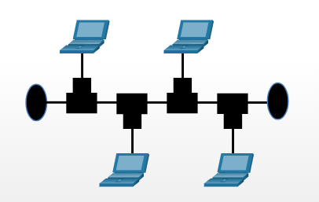
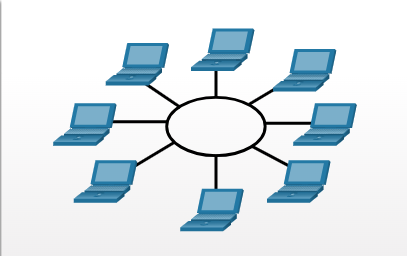
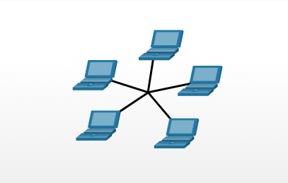
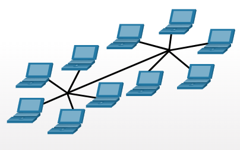
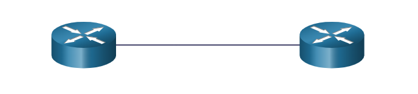
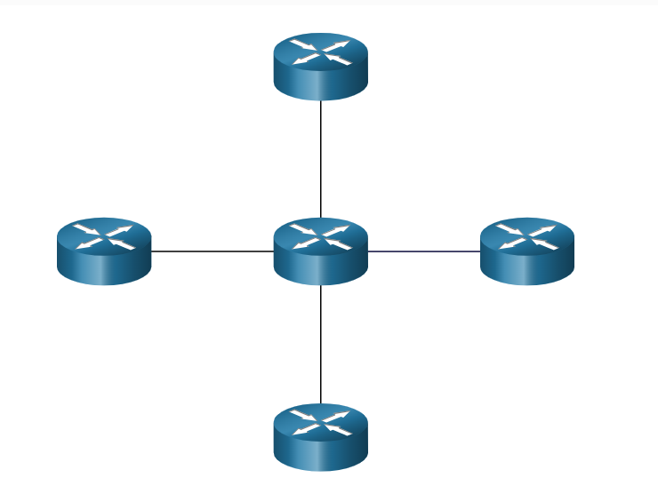
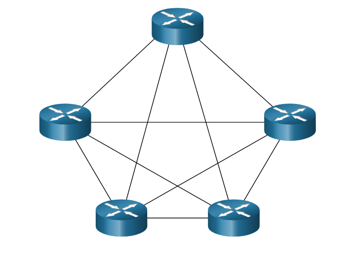

1.2.2. Clasificación de las redes
- Convergente vs no convergentes
Permite transmitir voz, video y audio por la misma infraestructura.
- Orientadas a conexión o no orientadas a conexión
Estableciemnto previo (RTB, red telefónica basica)
- Conmutación por circuitos o por paquetes
La conmutación por circuitos no se dividen y forman un uso poco eficiente de las lineas. Llegan de forma ordenada
La conmutación por paquetes se dividen en segmentos de información, cada paquete necesita la dirección destino y nº de secuencia. Llegan de forma desordenada y ofrecen mayor seguridad. Es un uso eficiente de las lineas
- Modo datagrama
Cada paquete puede viajar por un camino diferente. Tienen que llevar la dirección destino y pueden llegar desordenadas.
- Modo circuito virtual
Todos los paquetes viajan por el mismo camino. El primer paquete marca el camino y el resto llegan de forma ordenada
- PAN, LAN, MAN, WAN
1.2.3. Tipologías de red
Identifica como se conectan los dispositivos
Topologías Fisicas LAN
- Bus

- Anillo

- Estrella

- Estrella extendida

Topologías Fisicas WAN
- Punto a punto

- Hub and spoke

- Malla

Topologías Lógicas
Se refiere a la forma en la que se transmiten las tramas
- Broadcast o por contienda
Si un dispositivo desea transmitir debe comprobar que el medio de transmisión esté libre. Si está libre pone la trama en el medio. Si ha habido colisión esperar un tiempo aleatorio y volver a escuchar.
El protocolo que usa es el CSMA/CD (Carreer Sense Multiple Acces /Collision Detection). No es eficiente si hay muchas conexiones.
- Pase de testigo
El dispositivo que desea transmitir tiene que esperar a que llegue el token. Es bueno cuando muchos desean transmitir pero no es el que más se usa. (Su topología fisica es el anillo "tokenring")
1.2.4. Conexiones a internet
Para usuarios:
- FTTH (Fiber To The Home)
- ADSL (Asymetric Digital Subscriber Line (par telefónico)). Tiene un ancho de banda de descarga mayor que el de subida.
- Cable: HFC (Hybrid Fiber Coaxial)
- Datos móviles: Radioenlaces a la estación base.
Para empresas:
- FTTH
- WiMAX
- Satelite
- Linea dedicada
- DSL Empresarial
- Metro LAN
Modelo OSI y modelo TCP/IP
Los protocolos son conjuntos de normas que permiten acceder al medio de transmisón, seguridad, controlar el flujo de datos, identificar.
| Modelo OSI |
PDU |
Modelo TCP/IP |
| Aplicación |
Datos |
Aplicación |
| Presentación |
| Sesión |
| Transporte |
Segmento |
Transporte |
| Red |
Paquete |
Internet |
| Enlace de datos |
Trama |
Acceso a red |
| Física |
Beneficios del uso de capas:
- Ayuda en el diseño de protocolos
- Fomenta la competéncia
- Evita que los cambios de tecnología afecten a capas superiores.
Modelo OSI
Es un modelo teórico que se creó para estandarizar la comunicación entre diferentes dispositivos. Se compone de 7 capas:
- 1. Capa Física
Función :Transmite bits a través del medio físico (cable, fibra óptica, ondas de radio)
Elementos:
- Cables (UTP, fibra óptica, coaxial...)
- Conectores (RJ45, puertos USB...)
- Señales eléctricas, ópticas o de radio.
Para qué sirve: Define las caracteristicas físicas del medio de transmisión, como voltajes, sincronización y velocidad.
- 2. Capa de Enlace de Datos
Función: Garantiza la transferencia libre de errores entre nodos conectados físicamente. Divide datos en tramas y gestiona el acceso al medio.
Elementos:
- Direcciones MAC
- Switches
- Protocolos como Ethernet, Wi-fi, PPP
Para qué sirve: Detecta y corrige errores de transmisión, controla quién usa el medio de transmisión y organiza los datos en tramas.
- 3. Capa de Red
Función: Determina la mejor ruta para enviar los datos entre dispositivos (enrutamiento).
Elementos:
- Direcciones IP (IPv4/IPv6)
- Routers
- Protocolos como IP, ICMP, RIP, OSPF.
Para qué sirve: Permite que los datos viajen a través de múltiples redes, asegurando que lleguen al destino correcto.
- 4. Capa de Transporte
Función: Asegura la entrega confiable de datos de extremo a extremo. Gestiona la segmentación y reensamblaje.
Elementos:
- Protocolos como TCP, UDP
- (ejemplo: puerto 80 para HTTP, puerto 443 para HTTPS)
Para qué sirve: Proporciona control de errores, retransmisión si es necesario (TCP) y garantiza la entrega ordenada de los datos.
- 5. Capa de Sesión
Función: Establece, mantiene y finaliza las conexiones entre aplicaciones.
Elementos:
- Protocolos como NetBIOS, RPC, PPTP
- APIs y bibliotecas de programación
Para qué sirve: Permite que las aplicaciones en diferentes dispositivos se comuniquen y sincronicen.
- 6. Capa de Presentación
Función: Traduce, cifra y comprime los datos para que puedan ser interpretados por las aplicaciones.
Elementos:
- Protocolos como SSL, TLS
- Formatos de datos como JPEG, MP3, PDF
Para qué sirve: Garantiza que los datos sean legibles y comprensibles para las aplicaciones.
- 7. Capa de Aplicación
Función: Proporciona servicios de red a las aplicaciones, como correo electrónico, transferencia de archivos, navegación web.
Elementos:
- Protocolos como HTTP, FTP, SMTP
- Aplicaciones como navegadores web, clientes de correo electrónico
Para qué sirve: Permite a las aplicaciones acceder a los servicios de red y comunicarse con otros dispositivos.